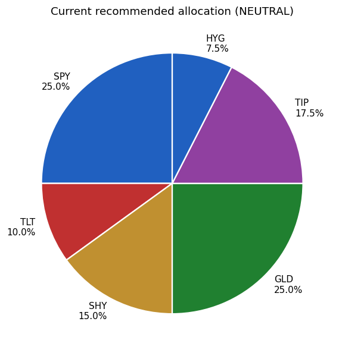
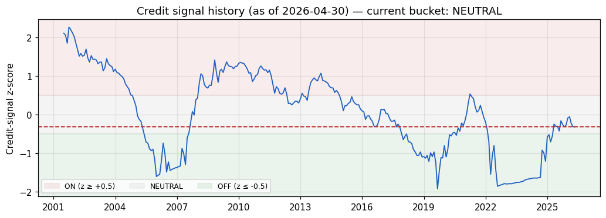
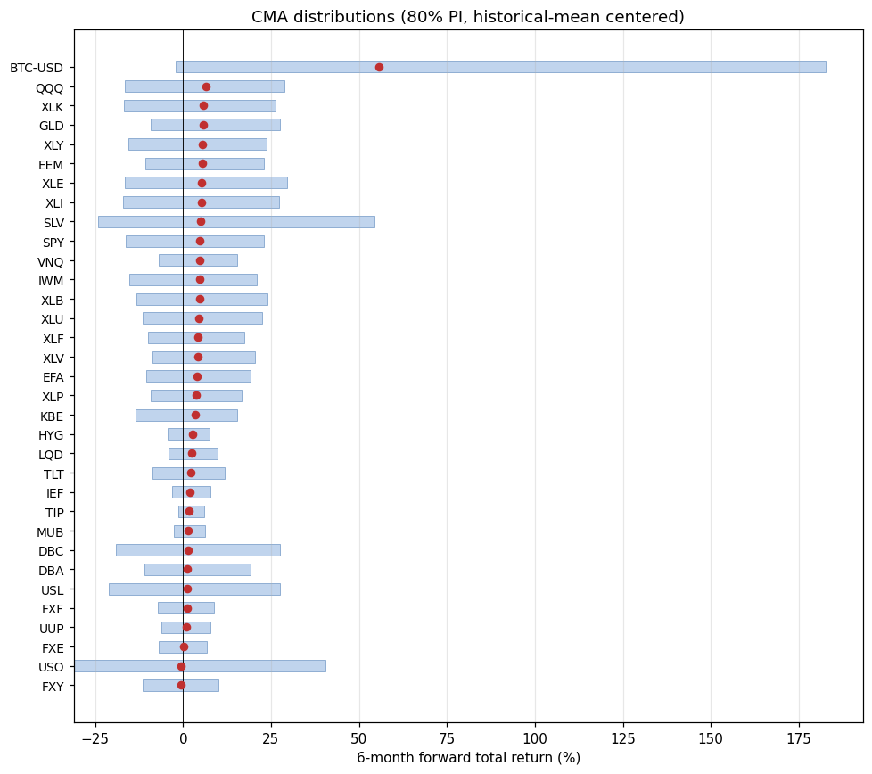

| Asset | Weight |
|---|---|
| SPY | 25.0% |
| TLT | 10.0% |
| SHY | 15.0% |
| GLD | 25.0% |
| TIP | 17.5% |
| HYG | 7.5% |


80% prediction intervals from TimesFM 2.5 with current-regime volatility; medians recentered to historical 6-month mean per asset. Use for risk budgeting / scenario analysis, not for tactical allocation.
| Strategy | CAGR | Vol | Sharpe | Max DD | 2008 | 2022 |
|---|---|---|---|---|---|---|
| Barbell PP (base) | +7.2% | 7.6% | 0.95 | -16.4% | -6.0% | -11.3% |
| Classic PP | +7.7% | 8.5% | 0.90 | -18.9% | -4.1% | -15.2% |
| Intl-duration PP | +7.2% | 8.5% | 0.85 | -18.6% | -5.8% | -14.1% |
| 60/40 (SPY/IEF) | +8.3% | 9.6% | 0.87 | -27.7% | -18.7% | -14.8% |
| SPY B&H | +10.8% | 15.6% | 0.69 | -46.3% | -36.8% | -18.2% |
Barbell replaces 15pp of TLT with SHY. Buys 4pp of 2022 protection and 15% lower vol for ~0.5pp of CAGR — a favorable trade in a fiscal-dominance / steepening-curve regime.
Backtested on Vanguard mutual-fund proxies where ETFs didn't yet exist (VUSTX, VWEHX, VIPSX, etc.). 5 bps/side transaction cost.
gep_eval/README.md.vol_6m + sqrt(t10y2y) — in-sample p<0.001, live t-stat 1.11.
Treat tactical tilt as a small, low-confidence overlay on the PP base.cron.md).